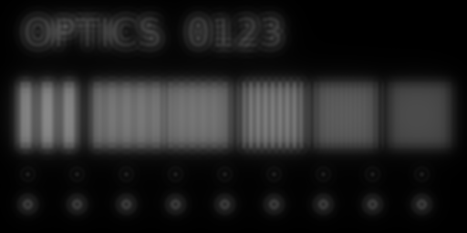
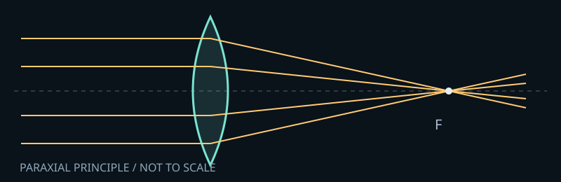

看见光线，
读懂镜头。
为什么镜头需要多组多片？非球面解决什么问题？像差、色散、衍射和 MTF 怎么影响照片？从原理到图像，再亲手改变参数，建立自己的理解。
01 / 建立系统认识
下载完全离线版 ↓镜头光学图解 →
焦距、光圈、景深、像差、色差、衍射、MTF 与焦外。结合交互计算、波前、点像与成像对照学习。

02 / 亲手改变参数镜片组合实验室 →
切换球面、非球面与消色差双片，增减镜片、调整孔径和焦点，观察光路、点列图与成像变化。

建议先阅读系统教程，再进入实验室做对照。模型计算与特征示意均有明确标注；本项目不代表商业镜头测量，也不按镜片数量评价画质。网页正文、图像与交互均在本地运行，外部参考资料链接需联网。